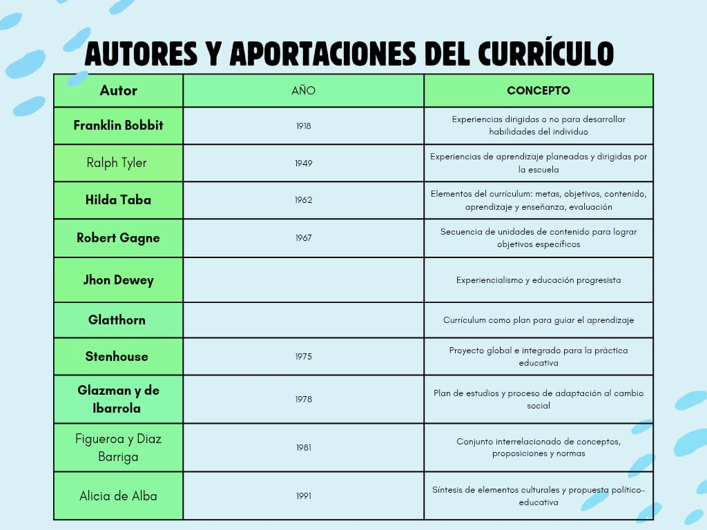

Registro de Estudiante
Por favor, ingresa tus datos para ingresar a la plataforma.
¡Bienvenido a Rincón Activo!
Este espacio está diseñado para que aprendas sobre teorías, modelos y herramientas educativas de manera interactiva y divertida.
Explora cada sección, juega y pon a prueba tus conocimientos.
Junio- Julio 2026
| Semana | Lunes | Martes | Miércoles | Jueves | Viernes | Sábado | Domingo |
|---|---|---|---|---|---|---|---|
| 23 | 01 | 02 | 03 | 04 | 05 | 06 | 07 |
| 24 | 08 | 09 | 10 | 11 | 12 | 13 | 14 |
| 25 | 15 | 16 | 17 | 18 | 19 | 20 | 21 |
| 26 | 22 | 23 | 24 | 25 | 26 | 27 | 28 |
| 27 | 29 | 30 | 01 | 02 | 03 | 04 FECHA DE CLASE | 05 |
Teorías de la Enseñanza y el Currículo
¿Qué es la enseñanza?

Ralph Tyler:
Modelo basado en objetivos, experiencias de aprendizaje, organización y evaluación.
Ralph Tyler fue un influyente educador estadounidense conocido como el "padre de la evaluación educativa". Su modelo curricular se centra en la definición clara de objetivos, la selección de experiencias de aprendizaje alineadas con esos objetivos, la organización lógica de los contenidos y la evaluación constante del proceso educativo.
Ejemplo: Definir como objetivo que los alumnos comprendan la fotosíntesis, diseñar actividades prácticas en el laboratorio y evaluar mediante una presentación grupal.

José Antonio Arnaz:
Planificación y desarrollo curricular con enfoque en organización y evaluación.
José Antonio Arnaz fue un pedagogo mexicano que propuso un modelo de planeación didáctica basado en la organización sistemática de los elementos curriculares, enfatizando la importancia de la evaluación y la coherencia entre los objetivos, contenidos y métodos de enseñanza.

Ángel Díaz Barriga:
Modelos críticos e integradores que consideran el contexto social y político.
Ángel Díaz Barriga es un destacado investigador mexicano en el campo de la educación. Sus aportes se centran en la crítica a los modelos tradicionales y en la integración de factores sociales, culturales y políticos en el currículo, promoviendo una educación más reflexiva y contextualizada.

Margarita Pansza:
Currículo por competencias.
Margarita Pansza ha trabajado en el desarrollo e implementation del currículo por competencias, donde el aprendizaje se orienta a la adquisición de habilidades and capacidades prácticas, promoviendo la autonomía y la aplicación de conocimientos en contextos reales.

Raquel Glazman y María de Ibarrola:
Modelo basado en investigación and adecuación al contexto.
Raquel Glazman y María de Ibarrola son investigadoras mexicanas que han aportado al análisis y desarrollo curricular desde una perspectiva investigativa, enfatizando la importancia de adaptar el currículo a las necesidades y realidades de cada contexto educativo.

Modelos de Enseñanza
Los modelos de enseñanza son enfoques teóricos y prácticos que orientan la labor docente y el proceso de aprendizaje. Cada modelo responde a una visión particular sobre cómo se produce el aprendizaje y cuál debe ser el papel del docente y del estudiante.
-
Modelo tradicional:
Se centra en la transmisión de conocimientos por parte del docente, quien es la figura principal en el proceso educativo. Los estudiantes suelen tener un rol más pasivo, asimilando la información proporcionada. Es un modelo directivo, estructurado y enfocado en la memorización y repetición.
Ejemplo: El profesor explica la lección en el pizarrón y los alumnos toman apuntes y memorizan los contenidos para un examen.Video: Modelo Tradicional -
Modelo conductista:
Basado en la psicología conductista, este modelo utiliza estímulos y refuerzos para modelar el comportamiento y el aprendizaje. El docente controla el proceso y ofrece retroalimentación constante. El aprendizaje se mide a través de resultados observables y cuantificables.
Ejemplo: Un colegio que adopta este modelo fomenta el aprendizaje activo, la colaboración y la resolución de problemas reales. El docente premia con puntos o reconocimientos a los estudiantes que responden correctamente y repite ejercicios hasta que todos logren el objetivo.Video: Modelo Conductista -
Modelo constructivista:
Este modelo enfatiza el aprendizaje activo y la construcción del conocimiento por parte del estudiante, quien interpreta la información y la relaciona con sus experiencias previas. El docente es un facilitador y guía, promoviendo la resolución de problemas y el trabajo colaborativo.
Ejemplo: Los alumnos trabajan en equipo para resolver un problema real, investigan y presentan sus conclusiones, mientras el docente orienta el proceso.Video: Modelo Constructivista -
Modelo humanista:
Se enfoca en el desarrollo integral de la persona, considerando sus necesidades, intereses y potencialidades. Busca un aprendizaje significativo, promueve la autonomía, la creatividad y el respeto por la individualidad de cada estudiante.
Ejemplo: El docente permite que los estudiantes elijan proyectos según sus intereses y fomenta la autoevaluación y el trabajo creativo.Video: Modelo Humanista -
Modelo por competencias:
Se centra en el desarrollo de habilidades y capacidades específicas que son relevantes para el desempeño en la vida profesional and personal. Los estudiantes son evaluados en función de su capacidad para aplicar los conocimientos y habilidades adquiridas en situaciones reales.
Ejemplo: Los alumnos realizan una práctica profesional o resuelven casos reales donde demuestran lo aprendido.Video: Modelo por Competencias -
Modelos emergentes:
Incluyen enfoques como el aprendizaje basado en proyectos, el aprendizaje invertido (flipped classroom), el aprendizaje colaborativo y el aprendizaje personalizado. Estos modelos buscan adaptarse a las nuevas formas de aprender y a las necesidades de los estudiantes en el siglo XXI, integrando tecnología, flexibilidad y atención a la diversidad.
Ejemplo: Los estudiantes investigan un tema en casa (flipped classroom) y en clase desarrollan proyectos colaborativos usando tecnología.
Los modelos de enseñanza no son excluyentes: en la práctica, los docentes suelen combinar elements de varios modelos para responder a las características y necesidades de sus estudiantes.
Otros modelos de enseñanza...
Preparación de Clase
La preparación de clase es un proceso fundamental para lograr una enseñanza efectiva. Implica planificar de manera anticipada los objetivos de aprendizaje, los contenidos, las actividades, los recursos y la evaluación. Una buena preparación permite al docente anticipar posibles dificultades, adaptar la enseñanza a las características del grupo y aprovechar mejor el tiempo en el aula.
- Definir objetivos: ¿Qué se espera que los estudiantes aprendan? Los objetivos deben ser claros, medibles y alineados con el currículo.
- Seleccionar contenidos: Elegir los temas y conceptos clave, priorizando aquellos que sean relevantes y significativos para los estudiantes.
- Diseñar actividades: Planificar ejercicios, dinámicas, proyectos o experimentos que promuevan la participación activa y el aprendizaje significativo.
- Elegir recursos: Materiales, tecnología, libros, videos, juegos didácticos, plataformas digitales, etc. Adaptar los recursos a las características del grupo.
- Prever la evaluación: Decidir cómo se comprobará el aprendizaje (preguntas, tareas, proyectos, autoevaluación, coevaluación, etc.).
- Adaptar la clase: Considerar la diversidad, los estilos y ritmos de aprendizaje, y prever apoyos para estudiantes que lo requieran.
- Organizar el tiempo: Distribuir las actividades y los momentos de la clase para aprovechar al máximo el tiempo disponible.
Se propone una secuencia clara para la planeación de clases:
- Propósito: Define el objetivo central de la clase, lo que se espera que los estudiantes logren.
- Organización: Selecciona y estructura los contenidos, recursos y actividades de acuerdo con el propósito.
- Trabajo: Desarrolla las actividades en el aula, promoviendo la participación activa y el aprendizaje colaborativo.
- Retroalimentación: Evalúa y brinda comentarios sobre el desempeño de los estudiantes, identificando logros y áreas de mejora.
- Orientación: Ajusta la enseñanza y orienta a los estudiantes para fortalecer su aprendizaje en futuras sesiones.
Arrastra y suelta los pasos en el orden correcto:
- Seleccionar contenidos
- Diseñar actividades
- Definir objetivos
- Elegir recursos
- Prever la evaluación
Intervención Educativa
Serie de acciones planificadas y sistemáticas dirigidas a mejorar el proceso de enseñanza-aprendizaje, ya sea para prevenir dificultades, abordar necesidades específicas de los estudiantes o promover su desarrollo integral.
Interacción
Accede directamente a las actividades, tareas y materiales del grupo en Google Classroom.
Código de acceso a la clase: bs4emgbp
Utilidad de la Evaluación
La evaluación es un proceso sistemático y continuo que permite obtener información relevante sobre el aprendizaje de los estudiantes and la eficacia de la enseñanza. Su utilidad va mucho más allá de asignar una calificación: ayuda a identificar avances, dificultades, necesidades y potencialidades, tanto de los alumnos como de la práctica docente.
Es fundamental distinguir entre evaluación, medición y calificación:
- Evaluación: Proceso integral que implica recolectar, analizar y reflexionar sobre información para mejorar el aprendizaje y la enseñanza.
- Medición: Asignación de valores numéricos o cualitativos a los aprendizajes observados, generalmente a través de pruebas o instrumentos.
- Calificación: Expresión final del resultado de la evaluación, usualmente en forma de número, letra o concepto.
La evaluación cumple funciones diagnóstica (antes de iniciar un proceso), formativa (durante el proceso, para retroalimentar y ajustar) y sumativa (al final, para certificar aprendizajes). Además, puede ser auto, coevaluación o heteroevaluación según quién la realice.
- Diagnóstica: Detecta los conocimientos previos y necesidades antes de iniciar un tema. Permite adaptar la enseñanza y partir del nivel real del grupo.
- Formativa: Da seguimiento al proceso de aprendizaje y permite ajustar la enseñanza en el camino. Ofrece retroalimentación constante y ayuda a corregir errores a tiempo.
- Sumativa: Valora los resultados al final de un periodo o unidad. Suele expresarse en calificaciones o informes y sirve para certificar aprendizajes.
- Autoevaluación y coevaluación: Permiten que los estudiantes reflexionen sobre su propio aprendizaje y el de sus compañeros, desarrollando responsabilidad y pensamiento crítico.
Selecciona el tipo de evaluación según el ejemplo:
Instrumentos de Evaluación
Los instrumentos de evaluación son herramientas que permiten recopilar información sobre el aprendizaje y desempeño de los estudiantes. La elección del instrumento depende del objetivo de la evaluación y del tipo de aprendizaje que se desea valorar. Utilizar una variedad de instrumentos enriquece el proceso y permite valorar diferentes competencias.
Es importante diferenciar entre instrumentos tradicionales (como exámenes escritos y listas de cotejo) y auténticos, que buscan valorar el desempeño en situaciones reales y complejas. Los instrumentos auténticos favorecen la evaluación de competencias, habilidades y actitudes, no solo de conocimientos teóricos.
- Proyectos: Permiten a los estudiantes aplicar conocimientos en la resolución de problemas reales.
- Estudios de caso: Analizan situaciones concretas para proponer soluciones fundamentadas.
- Portafolios: Recopilan evidencias del aprendizaje a lo largo del tiempo.
- Rúbricas: Facilitan la evaluación客观 y transparente de tareas complejas.
- Observación directa: El docente registra comportamientos, habilidades y actitudes en el contexto natural.
- Rúbricas: Tablas con criterios y niveles de desempeño para valorar trabajos, proyectos o presentaciones. Facilitan la retroalimentación clara y objetiva.
- Listas de cotejo: Listados de aspectos a observar o verificar en una tarea o actividad. Son útiles para comprobar si se cumplen ciertos pasos o requisitos.
- Escalas de valoración: Permiten calificar el grado de cumplimiento de ciertos criterios (por ejemplo: siempre, a veces, nunca).
- Exámenes: Pruebas escritas u orales para comprobar conocimientos o habilidades. Pueden ser de opción múltiple, preguntas abiertas, resolución de problemas, etc.
- Portafolios: Colección de trabajos del estudiante que evidencian su progreso a lo largo del tiempo. Permiten una visión integral del aprendizaje.